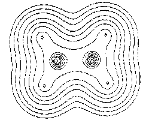
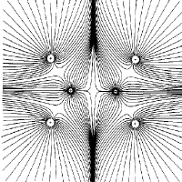
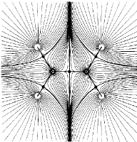
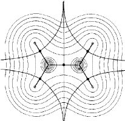
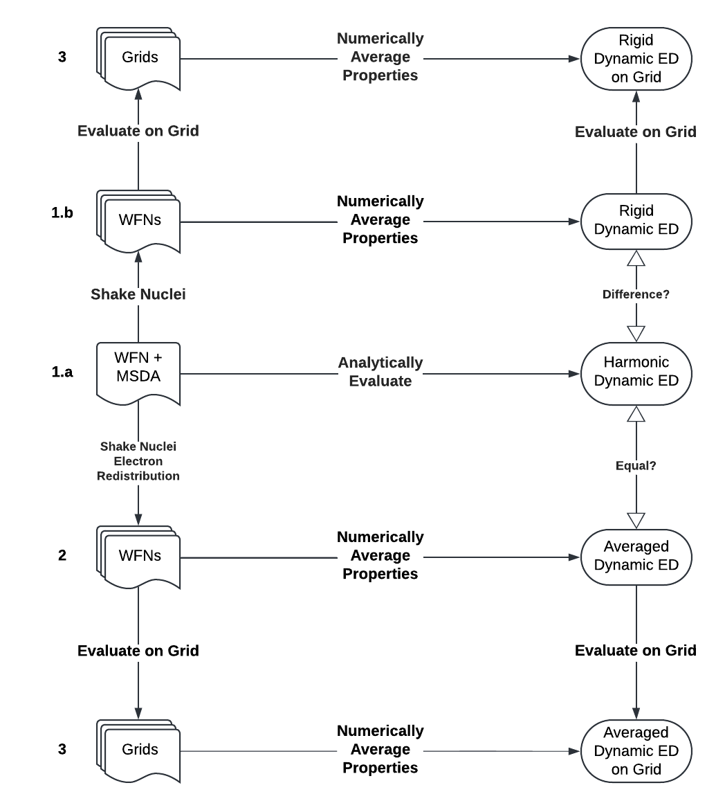

Welcome to aided’s documentation!¶


AIDED¶
Analysis and Investigation of the Dynamic Electron Density (AIDED) is an application which performs Electron Density (ED) topological analysis on the Dynamic Electron Density.
Installing¶
Python 3.10 or later is recommended.
AIDED can be installed from PyPI view pip install aided
pip install aided
Getting started¶
At present AIDED only performs analysis on wavefunction .wfn file formats.
To see some examples of this, reference the examples section.
Scientific Background¶
Standard application of Richard Bader’s QTAIM (Quantum Theory of Atoms in Molecules) is often applied to “static” molecular structures. That is, nuclei in space which are not in motion, to reveal much about the molecule or collection of molecules in question.
Topological Properties (TP) of the ED for molecule include things like:
Electron Density (ED)
The probability (non-negative scalar value) of finding an electron at a point.

Contour plot of the Electron Density of the Ethylene molecule (source).
Gradient, Hessian, Laplacian, etc.
Most other properties are derived from this value.
Properties like the Gradient, Hessian, and Laplcian can be used to identify features of the topological space.

Gradient trajectories of ED for Ethylene molecule (source).
Topological Features (TF) of the ED are features which give quantum or chemical information about molecular structure by using TPs. These include things like:
-
Based on the TP of gradients, the gradient trajectories can be traced to find the Surface of Zero flux. In QTAIM this defines the atomic boundaries.

The gradient trajector can be used to find the surface(s) of zero flux, defining the atomic boundaries. (source).

The surface of zero flux (atomic boundaries) superimposed upon the original Electron Density. (source).
Methodology and Workflows¶
Input types for static ED Analysis¶
Generally a file is given describing ED of Wavefunction (WFN) to be used to construct the ED. This WFN file can be used to analytically determine the ED or associated TPs at any point in space. Alternatively, a grid can be given which contains TPs evaluated at each point in space and the ED or TPs can be derived from the grid numerically.
The workflows are as follows:

Input types of dynamic ED Analysis¶
Methods with a single WFN file:
For all methods described here, a WFN file could be any file yielding the ability to describe or derive the analytic ED.
a. Single WFN with MSDA matrix - single TP harmonic approximation.
With an N atom molecular system, the MSDA is of size 3N x 3N. It represents the variance-covariance matrix of each (x, y, z) position for each atom with each other. That is, how does the motion of the x coordinate of Atom 1 vary with the y position of Atom 2?
Method 1.a calculates the dynamic electron density as a single dynamic ED as describe in (TODO: ref).
b. Single WFN with MSDA matrix - nuclear motion only.
While 1.a uses the harmonic approximation to calculate the dynamic electron density. 1.b uses an approximation to assume that electrons do not adapt to the motion of the nucleus. Instead, it takes multiple a single WFN files or representations (which each describe the ED around the initial ground state geometry) and “shakes” the nuclei according to the MSDA - without adapting the ED to each new nuclear geometry.
Method 1.b simply generates N nuclear configurations, calculates the TP for each, and then averages them together.
Methods using multiple WFN files:
Multiple WFN files - single TP harmonic approximation.
Given a single WFN file with ground state geometry an application (outside the scope of this project) can be used to generate multiple WFN files with different nuclear geometries which also have the electrons adapted to them. These WFN files can be used to calculate the dynamic ED as a single dynamic ED as describe in (TODO: ref).
Evaluate WFN files at grid points:
Grid based analysis
For any of the methods (1.a, 1.b, 2) above the WFN files can be evaluated at grid points to generate grid(s) of TP(s). Once this is done TFs can be calculated from the grid(s).